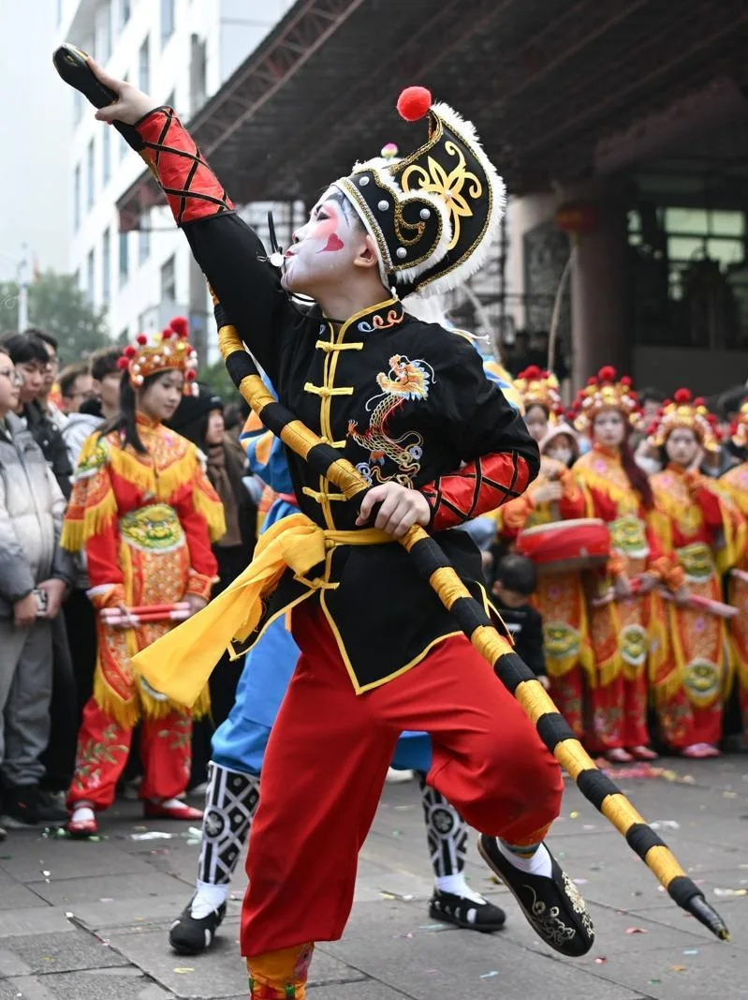
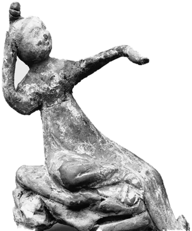

朝鲜族农乐舞
农乐舞俗称「农乐」，流传于吉林、黑龙江、辽宁的朝鲜族聚居区，源头可追到春播秋收时祭天的「踩地神」。 它把音乐、舞蹈、演唱揉在一起：小鼓舞、叠罗汉、扁鼓舞、长鼓舞、扇舞、鹤舞一路铺开， 最后压阵的是男子的象帽舞。
象帽舞最见功夫——舞者甩动缀在帽顶的长彩带，彩带可以长到二十米。 左右甩、前后立象尾，单甩、双甩，甚至三甩；站着能甩，蹲着、跪着、扑在地上也能甩。 一个人、一条彩带，在空中画出一个接一个的圆。
- 颈与腰的发力
- 彩带画出的圆
- 鼓点与脚步的咬合
传统舞蹈 · 以身传艺
器物流下来的是形，戏曲留下来的是腔，舞蹈留下来的只有身体。 一个动作能不能传下去，要看师徒之间一遍遍的纠正； 一支舞成不成立，还要看鼓点、场地和节令。

在国家级非遗名录里，传统舞蹈自成一类，编号以「Ⅲ」开头。 它不像器物那样能留下一件成品，也不像戏曲那样能留下剧本与唱腔—— 舞蹈的档案写在人的身上：肌肉的记忆、脚下的步子、抬手的分寸。
这一辑挑了四支舞：一支在舞台上，一支在街头，一支在火星里，一支在灯影里。 它们分属不同地域、不同民族，共同点是都得靠一群人同时动起来才算数。

农乐舞俗称「农乐」，流传于吉林、黑龙江、辽宁的朝鲜族聚居区，源头可追到春播秋收时祭天的「踩地神」。 它把音乐、舞蹈、演唱揉在一起：小鼓舞、叠罗汉、扁鼓舞、长鼓舞、扇舞、鹤舞一路铺开， 最后压阵的是男子的象帽舞。
象帽舞最见功夫——舞者甩动缀在帽顶的长彩带，彩带可以长到二十米。 左右甩、前后立象尾，单甩、双甩，甚至三甩；站着能甩，蹲着、跪着、扑在地上也能甩。 一个人、一条彩带，在空中画出一个接一个的圆。
英歌又叫「鹰歌」「唱英歌」，是把舞蹈、南拳套路和戏曲演技揉在一起的广场舞蹈，由男子表演， 相传已有三百多年。来源有几种说法：一说由当地尚武习俗变来，一说搬演《水浒传》里攻打大名府的故事。
舞者勾脸谱、着武士服，手执一对短木棒，在锣鼓与螺号里交错叩击，边走边舞。 队形有「双龙出海」「猛虎下山」「麦穗花」「田螺圈」，套路有「洗街」「布田」「旋槌」「槌花」； 人数少则二十四人，多可到一百零八人。舞到高潮，呐喊与螺号一起响起来。 行内有句话：北有安塞腰鼓，南有普宁英歌。
龙舞是分布最广的民间舞蹈。按龙的形制分，有布龙、纱龙、纸龙、草龙、板凳龙、百叶龙、火龙； 表演程序一般是请龙、出龙、舞龙、送龙。
黄龙溪的火龙灯舞起于南宋，把龙、灯、舞、火合在一处。出场时宫灯、排灯、牌灯在前开道， 龙身随龙头起伏翻腾，烧花人对准队伍打出火花。夜里火星炸开，舞龙的人就从火里穿过去—— 胆子、配合和火候，缺一样都不成。
灯舞以彩灯为道具，清代已有记载，多在年节、元宵，或祈雨、祭祀、求丰年的时候演出。 青田鱼灯舞是浙江最有代表性的鱼灯类舞蹈，鱼的样子取自当地稻田里的田鱼。
相传明代刘基曾把当地鱼灯的种类和数量加以发展，又把大量阵图融进去， 于是这支舞带上了军事操习的味道。舞者包头巾、系腰带、扣护腕、打包腿，打扮得像古代武士， 各举鱼灯一盏，听领队的哨子走「进门阵」「编篱阵」， 高潮时走出「春鱼戏水」「夏鱼跳滩」「秋鱼恋浒」「冬鱼结龙」，最后以「鲤鱼跳龙门」收尾。 当地人称它「天下第一鱼」。
本页四张照片取自团队整理并提供的舞蹈素材，原图与授权信息随素材提供方记录， 见 docs/sources.md 与 carousel/README.md。 唐代陶舞俑来自大都会艺术博物馆开放获取（CC0），图注已标注馆藏与许可。 名录编号、批次与申报地区核对自中国非物质文化遗产网项目档案，核验日期见 sources.md。